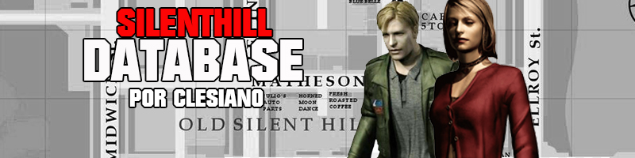

INÍCIO
SILENT HILL
SILENT HILL 2
SILENT HILL 3
SILENT HILL 4
ORIGINS
HOMECOMING
DAWNPOUR

COMO OBTER AS ARMAS DO SILENT HILL 2
Mais Informações
▲
 Mais Informações
Mais Informações
Mais Informações
Mais Informações